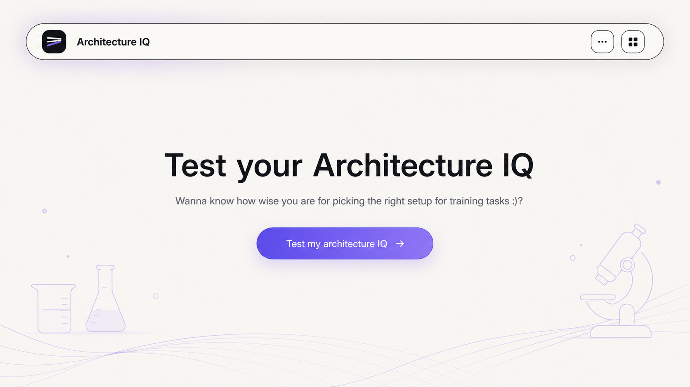
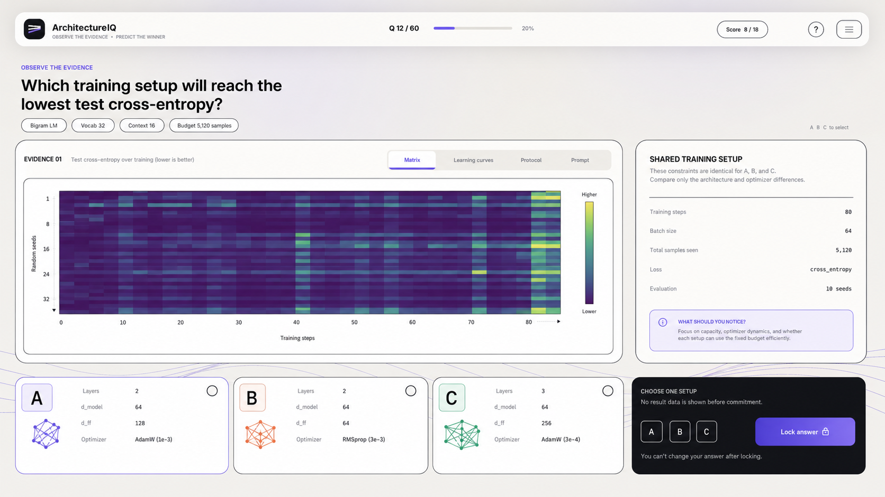
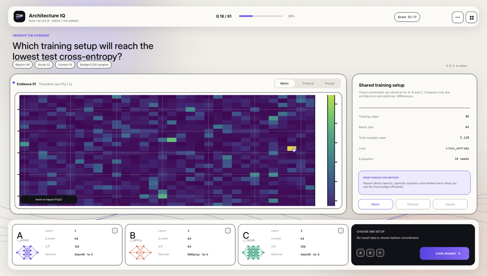

ArchitectureIQ Vanilla Frontend Plan
Implement the question inspector as a polished experience with an easy welcoming first page, followed by a single-screen benchmark quiz inspired by the supplied reference: rounded lab panels, sparse typography, thin charcoal outlines, soft off-white surfaces, lavender emphasis, and a pre-commit flow that hides result metrics until the user locks an answer.
Visual Target
The frontend should feel like an interactive lab console rather than a dashboard. The user studies evidence, compares fixed setup constraints, selects A/B/C, then commits. Before commitment, no winner data or ranked metrics should be visible.



Product Flow
-
Start on a welcoming first page with the title
Test your Architecture IQ, the subtitleWanna know how wise you are for picking the right setup for training tasks :)?, and one centered primary button labeledTest my architecture IQ. -
After the user clicks the welcome button, load the first available question from
data/, or show a compact empty state that asks the user to generate question artifacts. - Present the question prompt as the primary object, with metadata chips for family, budget, metric, choices, and current question progress.
- Let the user inspect evidence in tabs: dataset/matrix, learning curves, protocol, and prompt/source files.
- Keep candidate cards visible at the bottom of the viewport so A/B/C comparison and answer commitment stay ergonomic.
- On lock answer, reveal correctness, ranked metrics, per-candidate summaries, and file inspection affordances.
Screen Inventory
Welcome Page
First screen only: a calm centered title, the friendly subtitle, and a single lavender CTA button. No navigation, sidebar, question controls, cards, or extra explanatory text should appear before the user starts.
Question Shell
Replace the default Streamlit sidebar-first experience with a top capsule command bar. Include identity, current question number, progress bar, score pill, random/next controls, and a compact question selector.
Evidence Panel
Move dataset plots, learning curves, prompt text, and generated file views into a bordered evidence region. Use segmented tabs styled as pills rather than default tabs where possible.
Shared Setup Panel
Extract invariant budget, loss, batch, training steps, and evaluation seeds into a right-side summary panel so candidate cards only show what differs.
Candidate Rail
Render candidate setup cards as a bottom comparison rail. Each card shows the letter, short candidate id, small architecture glyph, and differing parameters. Selection state uses a subtle outline and corner marker.
Implementation Priorities
-
Add
st.session_state.startedwith a default ofFalse. Render the welcome page until the user clicksTest my architecture IQ, then set it toTrueand rerun. -
Refactor
tools/question_inspector/app.pyinto layout helpers: shell, hero prompt, evidence panel, shared setup panel, candidate rail, and answer lock panel. Keep artifact loading unchanged. -
Extend
CUSTOM_CSSwith the vanilla design tokens and Streamlit selector overrides for buttons, tabs, containers, dataframes, alerts, and code blocks. - Derive invariant and variant fields from each question's candidate specs. Put shared fields in the right panel; keep candidate cards focused on differences.
- Add an evidence tab model in session state so Matrix/Dataset, Curves, Protocol, Prompt, and Source are predictable and keyboard-friendly.
-
Preserve the existing committed-answer logic, but route all pre-commit actions through the dark lock panel.
Metrics and ranked results stay hidden until
committed_letteris set.
Style System
- Background: warm off-white with very subtle lavender and coral radial washes.
- Panels: near-white surfaces with thin charcoal borders and soft shadows.
- Accent: lavender for progress, active tabs, selected card borders, and lock button.
- Commit: black rounded answer panel to create strong decision focus.
- Candidate C: green architecture glyph and selected-state details.
- Candidate B: coral architecture glyph and comparison accents.
Data And State Notes
Keep
- Existing artifact loader APIs and question discovery behavior.
- Existing quiz result storage in
st.session_state.quiz_results. - Existing file viewer support for JSON, Python, prompt text, and curves.
- Existing post-commit reveal of summaries, metrics, and ranked results.
Change
- Move navigation out of the sidebar into the top command bar.
- Replace generic choice cards with compact visual comparison cards.
- Separate shared setup constraints from candidate-specific differences.
- Use a fixed-bottom answer region on desktop and an inline stacked region on mobile.
Responsive Behavior
The welcome page should remain centered and uncluttered on every viewport. Desktop quiz mode should preserve the reference composition: evidence panel on the left, setup panel on the right, and a bottom choice rail. Tablet collapses the right setup panel under the evidence panel. Mobile stacks prompt, evidence, setup, candidates, and lock panel in that order with sticky answer controls only if they do not cover content.
Verification
- Verify the first page shows only
Test your Architecture IQ, the requested subtitle, and theTest my architecture IQbutton. - Run
python tools/question_inspector/run.pywith the included demo question artifacts. - Verify pre-commit state hides metrics, winner, ranked results, and summary-derived performance values.
- Verify selecting and locking A/B/C records score once and cannot double-count on rerun.
- Check at desktop, tablet, and mobile widths for text overflow, panel overlap, and unusable sticky controls.
- Run
pytest tests/test_question_inspector.py tests/test_interactive.pyafter behavior changes.
Risks
- Streamlit's generated DOM is brittle, so CSS overrides should be centralized and scoped to stable classes where possible.
- Matplotlib plots may visually clash with the vanilla UI unless their figure backgrounds, grid colors, and label sizing are restyled.
- Extracting shared versus variant fields needs a small deterministic helper to avoid hiding meaningful candidate differences.